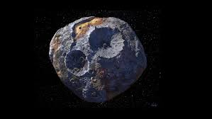
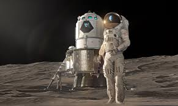
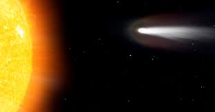

La astronomia en el mundo
La historia de la astronomia es el relato de las observaciones, descubrimientos y conocimientos adquiridos a lo largo de la historia en materia astronomica.
La astronomia en la historia
La historia de la astronomia es el relato de las observaciones, descubrimientos y conocimientos adquiridos a lo largo de la historia en materia astronomica.

|

|
En casi todas las religiones antiguas existia la cosmogonia, que intentaba explicar del origen del universo, ligando este a los elementos mitologicos. La Astronomia es tan antigua como la historia de la humanidad.
Continuaremos desglozando este tema, explicando los distintas cosas que forman parte de la astronomia.
Conceptos relevantes y basicos de la astronomia:
Agujeros negros:

|
Arqueoastronomia:

|
Asteroides:
|  |
Astronauta o Cosmonauta:
|  |
Cometa:
|  |
Para continuar pasar a la sigueinte pagina presiona clic sobre aqui Visit Conceptos de astronomia
puede ingresar a los siguientes link para poder conocer mas sobre este tema:
Visit Wikipedia.com
Visit sea-astronomia.com